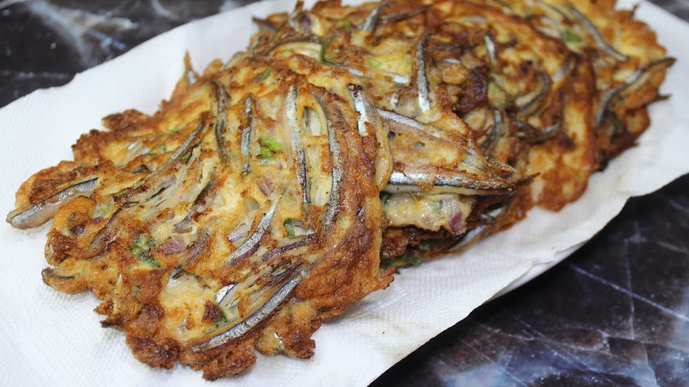

Back to recipes list
Tortang Dilis
Native recipe from the Philippines. A salty viand which is often eaten with garlic rice and can be dipped in
vinegar.

Ingredients
- 1 Cup cooking oil
- 1 Cup dried dilis small
- 2 large eggs
- ground black pepper to taste
Steps
- In a small frying pan over medium heat, heat oil. Once hot, add the dilis.
Cook the dilis, stirring, just until golden brown and crisp. Remove the pan from the heat,
and using a slotted spoon, scoop the tiny fish from the hot oil and transfer to a paper towel-lined
plate. Set aside.
-
In a bowl, beat the eggs. Lightly season with ground black pepper. Add the crunchy dilis to the
eggs, and stir to coat.
- In the same frying pan used to fry the dilis, drain the oil, reserving about 2 tablespoons in the
pan. Add the egg and dilis mix to the hot pan, spreading the dilis out to the edges.
- Cook until the edges are set and the center is firm before flipping to cook the other side. Remove
from heat. Slice and serve.
*Click
here for credits for picture
*Click here
for credits for recipe